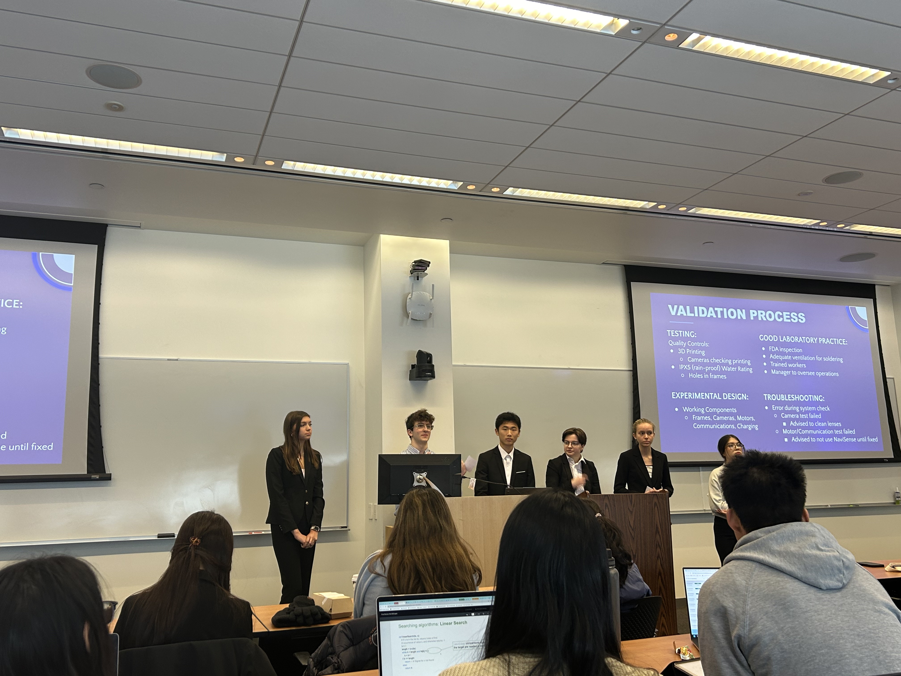
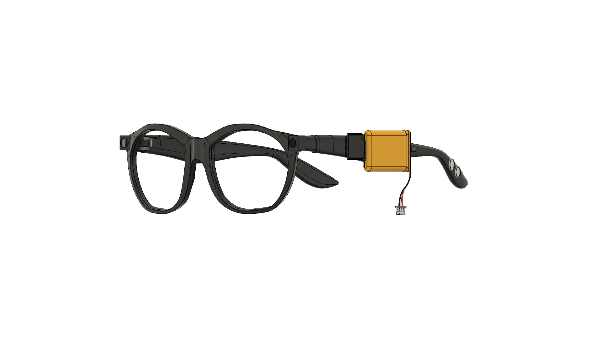
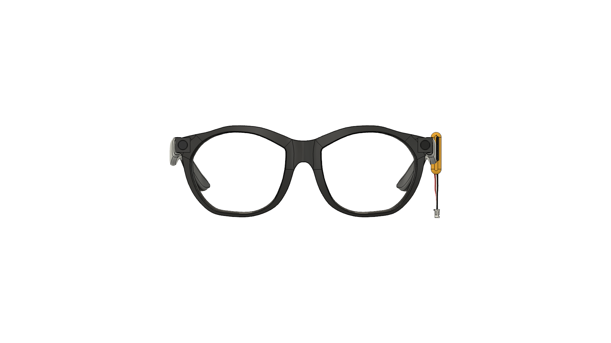
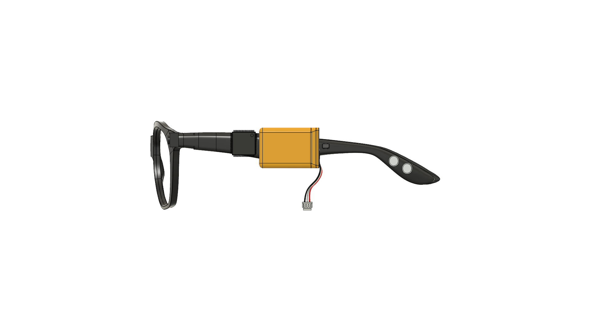

NaviSense
Class design concept; specifications and projected pricing below describe the proposal.
NaviSense is a class design concept intended to support mobility for visually impaired individuals using a multi-sensor approach for obstacle detection, terrain recognition, and navigation. The system includes a smart glasses frame with dual cameras powered by machine learning for real-time object detection and terrain analysis. These cameras communicate via Bluetooth with two wristbands, each equipped with an ultrasonic sensor and haptic motors that vibrate for obstacle alerts and directional guidance. The wristbands provide redundancy, compensating for limitations of visual detection. The NaviSense app enables GPS navigation, sending turn-by-turn haptic cues. Compared to single-sensor solutions like the Sunu band, NaviSense aims to improve accuracy and reliability; these benefits have not been established by the concept description. The proposal identifies a possible class II device pathway and plans for regulatory and standards review; no approval or certification is claimed. The proposal estimates a $349 selling price and a $218.16 production cost, and identifies a potential audience of 200,000–500,000 U.S. users reliant on guide dogs or white canes.



